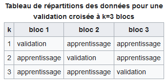

Scikit Learn¶
Scikit-learn est une bibliothèque libre Python destinée à l’apprentissage automatique. Elle est développée par de nombreux contributeurs notamment, dans le monde académique, par des instituts français d’enseignement supérieur et de recherche comme l’Inria.
Elle propose dans son framework de nombreuses bibliothèques d’algorithmes à implémenter clé en main, à disposition des data scientists.
Elle comprend notamment des fonctions pour estimer des forêts aléatoires, des régressions logistiques, des algorithmes de classification, et les machines à vecteurs de support. Elle est conçue pour s’harmoniser avec d’autres bibliothèques libres Python, notamment NumPy et SciPy.
Source : Wikipedia
Pour plus d’informations, consulter le site officiel de scikit-lear
import pandas as pd
import numpy as np
drinks = pd.read_csv("../Maths/pandas_exercices/qualite-vin-rouge.csv")
data = drinks.values
X = data[:,:11]
y = data[:,11]
X.shape
(1599, 11)
Subdivision en échantillons d’apprentissage et de test¶
On utilise le mudule sklearn.modele_selectiondont la doc officielle est consultable ici
(exemple de code qui marche sur un jeu de données après son importation)
from sklearn import model_selection
#subdivision des données : exemple avec éch.test= 300
X_app,X_test,y_app,y_test = model_selection.train_test_split(X,y,test_size = 300, random_state = 0)
print(X_app.shape,X_test.shape,y_app.shape,y_test.shape)
# éch.app = taille de la matrice de départ (1599) - éch.test (300) = 1299
(1299, 11) (300, 11) (1299,) (300,)
Construction du modèle sur l’échantillon d’apprentissage (exemple de code avec la régression linéaire et polynomiale)¶
from sklearn.linear_model import LogisticRegression
#création d'une instance de la classe LogisticRegression
lr = LogisticRegression(solver="liblinear")
modele = lr.fit(X_app,y_app)
print(modele.coef_,modele.intercept_)
[[-0.12278587 2.22614985 -0.55153076 0.25235712 0.24746431 0.13536923
-0.1226654 -0.03533445 0.44953865 -0.29418977 -0.51622414]
[-0.15609688 2.43483731 0.25597229 0.08082915 0.25254871 0.00326801
-0.01934333 -0.23386545 0.2316966 -0.54200419 -0.29059609]
[ 0.03530297 1.46597539 0.25852551 -0.0603076 1.33431618 -0.02062759
0.02028731 1.52193285 1.44474489 -1.78597062 -0.84379093]
[ 0.01213624 -1.17835338 -0.8896766 -0.01519475 -0.33091125 0.01924233
-0.01269057 -0.26549778 -0.32848966 0.8009871 0.16794296]
[-0.03487567 -3.18477227 0.18292502 0.12127181 -1.28221676 0.01142552
-0.01376678 -1.44970223 -2.04506505 1.86263232 0.78058523]
[-0.37642933 -0.50305567 0.80430051 -0.29488693 -0.21258568 0.01175952
-0.01698033 -0.64335219 -2.65399148 0.56065139 0.87071325]] [-0.03801806 -0.23276004 1.52212351 -0.28705098 -1.43982995 -0.64272058]
Prédiction sur l’échantillon test (exemple de code qui fait la prédiction)¶
y_pred = modele.predict(X_test)
from sklearn import metrics
#matrice de confusion
#confrontation entre Y obs. sur l’éch. test et la prédiction
cm = metrics.confusion_matrix(y_test,y_pred)
print(cm)
[[ 0 0 2 0 0 0]
[ 0 0 6 3 0 0]
[ 0 0 95 30 1 0]
[ 0 0 40 89 4 0]
[ 0 0 2 21 4 0]
[ 0 0 0 1 2 0]]
#taux de succès
acc= metrics.accuracy_score(y_test,y_pred)
print(acc)
0.6266666666666667
#taux d'erreur
err= 1.0 -acc
print(err)
0.3733333333333333
#sensibilité (ou rappel)
se = metrics.recall_score(y_test,y_pred, average = None)
print(se)
[0. 0. 0.75396825 0.66917293 0.14814815 0. ]
Evaluation sur l’échantillon test : Erreur quadratique moyen (exemple de code)¶
from sklearn.metrics import mean_squared_error
metrics.mean_squared_error(y_test,y_pred)
0.4633333333333333
Validation croisée (k-folds) (Principe + exemple de code qui permet de faire l’évaluation d’un modèle par la validation croisée¶
La validation croisée (« cross-validation ») est, en apprentissage automatique, une méthode d’estimation de fiabilité d’un modèle fondé sur une technique d’échantillonnage.
En validation croisée à k blocs, « k-fold cross-validation » : on divise l’échantillon original en k échantillons (ou « blocs » ), puis on sélectionne un des k échantillons comme ensemble de validation pendant que les k-1 autres échantillons constituent l’ensemble d’apprentissage. Après apprentissage, on peut calculer une performance de validation. Puis on répète l’opération en sélectionnant un autre échantillon de validation parmi les blocs prédéfinis. À l’issue de la procédure nous obtenons ainsi k scores de performances, un par bloc. La moyenne et l’écart type des k scores de performances peuvent être calculés pour estimer le biais et la variance de la performance de validation.

from sklearn.model_selection import cross_val_score
success = cross_val_score(modele, X_app, y_app, cv=5)
success
array([0.58846154, 0.55 , 0.56538462, 0.58846154, 0.57528958])
GridSearch (Principe + exemple de code)¶
from sklearn import svm
mvs= svm.SVC()
modele2 = mvs.fit(X_app,y_app)
#prédiction ech. test
y_pred2 = modele2.predict(X_test)
#matrice de confusion
print(metrics.confusion_matrix(y_test,y_pred2))
#succès en test
print(metrics.accuracy_score(y_test,y_pred2))
[[ 0 0 0 2 0 0]
[ 0 0 3 6 0 0]
[ 0 0 51 75 0 0]
[ 0 0 30 103 0 0]
[ 0 0 1 26 0 0]
[ 0 0 0 3 0 0]]
0.5133333333333333
#combinaisons de paramètres à évaluer
parametres= [{'C':[0.1,1,10],'kernel':['rbf','linear']}]
#évaluation en validation croisée de 3 x 2 = 6 configurations
#accuracysera le critère à utiliser pour sélectionner la meilleure config
#mvsest l’instance de la classe svm.SVC (cf. page précédente)
grid= model_selection.GridSearchCV(estimator=mvs,param_grid=parametres,scoring='accuracy')
#lancer la recherche –attention, gourmand en calculs
grille = grid.fit(X_app,y_app)
#résultat pour chaque combinaison
print(pd.DataFrame.from_dict(grille.cv_results_).loc[:,["params","mean_test_score"]])
#meilleur paramétrage
print(grille.best_params_) # {‘C’ : 10, ‘kernel’ : ‘linear’}
params mean_test_score
0 {'C': 0.1, 'kernel': 'rbf'} 0.491919
1 {'C': 0.1, 'kernel': 'linear'} 0.567357
2 {'C': 1, 'kernel': 'rbf'} 0.498848
3 {'C': 1, 'kernel': 'linear'} 0.567357
4 {'C': 10, 'kernel': 'rbf'} 0.550431
5 {'C': 10, 'kernel': 'linear'} 0.570434
{'C': 10, 'kernel': 'linear'}
#meilleur performance –estimée en interne par validation croisée
print(grille.best_score_)
#prédiction avec le modèle «optimal» c.-à-d. {‘C’ : 10, ‘kernel’ : ‘linear’}
y_pred3 = grille.predict(X_test)#taux de succès en testprint(metrics.accuracy_score(y_test,y_pred3))
Sélection des variables (Principe + exemple de code avec la méthode recursive feature elimination).¶
SimpleImputer¶
Remplacer les valeurs manquantes par la moyenne
imptr = SimpleImputer( = np.nan, strategy = 'mean')
LabelEncoder¶
Définition du principe de FeatureScaling + exemple de code de son utilisation avec StandardScaler¶
Certains outils statistiques nécessitent une transformation des données afin de pouvoir être utilisés ou optimisés. Par exemple, dans le cadre de l’utilisation d’un test de Student ou bien d’une régression linéaire, l’hypothèse de normalité est primordiale.
Ou encore, dans le cas où les données ne répondent pas aux hypothèses recquises, les équivalents non paramétriques de la théorie des tests nécessitent une transformation des données en vecteur des rangs associés aux données.
Les méthodes de transformation des données se déclinent donc en trois familles:
la standardisation ou l’action de centrer-réduire les données pour diminuer l’échelle de dispersion tout en conservant la forme des distributions conjointes (moyenne = 0 et ecart-type = 1) (= centrer-réduire la matrice X en retranchant pour chaque vecteur Xj sa moyenne et en divisant par son écart-type)
la transformation en vecteur de rangs dont l’objectif est de se concentrer sur l’ordre des valeurs des données et plus sur les valeurs elles-mêmes,
la normalisation des données. Normaliser les données revient à appliquer une fonction f sur Xj tel que f(j) suit une loi normale. Plusieurs méthodes simples existent : l’élévation au carré, la transformation logarithmique, la transformation arc-sinus, exponentielle, racine carrée, etc. Cependant, ces méthodes requièrent l’absence de valeurs négatives (à l’exception de la mise à l’exponentielle et de la transformation inverse). Il existe d’autres outils de normalisation plus performants comme la normalisation de box-cox